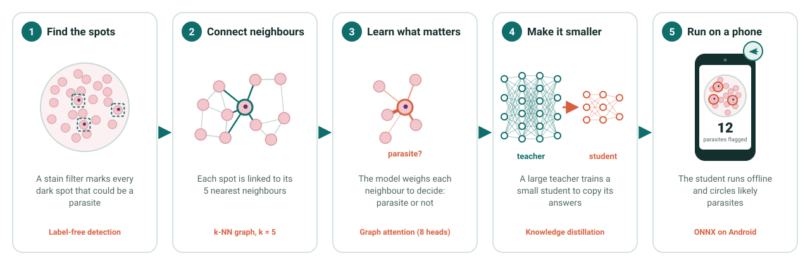

Page title goes here
This template shows every building block used on the six pages, so the layout can be checked on a laptop and a phone before the real pages are built (T13).
Buttons
Watch the demo How it worksThree cards (Home)
The problem
Short card text, two or three lines long.
My approach
Short card text, two or three lines long.
Built for low-resource settings
Short card text, two or three lines long.
Pipeline diagram (My Approach)

Highlighted box (for example ‘Why a graph?’)
Mint background box for a short explanation.
Warning box. Used for the ‘Not a diagnostic tool’ notice on the Demo page.
Status strip. Used for ‘Where things stand’ on the Home page.
Timeline (Progress Updates)
- Up next
Next step title Up next
One or two lines of text.
- November 2026
Finished step title Done
One or two lines of text.
Sources
- [2] Reference in IEEE style, numbered as in the proposal.
- [3] Another reference.